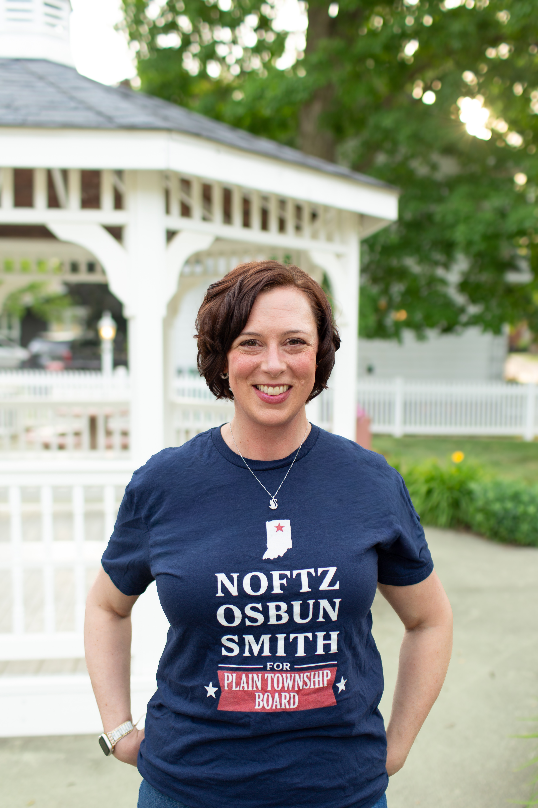
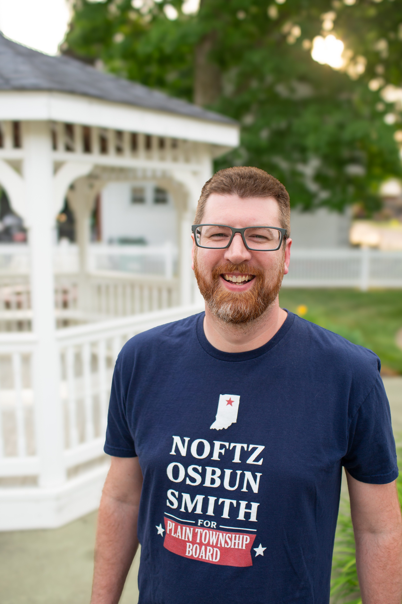

The Candidates

REBECCA NOFTZ
Rebecca “Becca” Noftz has called the Warsaw area home for more than two decades, building her career and raising her family in the community. With a background in bioengineering and 24 years in Warsaw’s medical device industry, Becca has worked in engineering, project leadership, and regulatory affairs—experience that has shaped how she listens, solves problems, and approaches decisions with care and accountability.
Read More →
ROBERT OSBUN
Local government is fundamentally about community stewardship. I am running for the Board because this position comes with a responsibility to make thoughtful decisions and follow through.
My goal is to ensure that township resources are managed wisely. By focusing on financial accountability, we can guarantee that Plain Township remains...
Read More →
BRIAN SMITH
I am running to ensure our local government works for the people who live here. My focus is on service, action, and open lines of communication with the community.
I believe there is an opportunity to look at our local resources with new eyes and focus on practical improvements that make a real difference...
Read More →